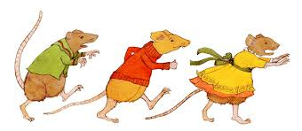
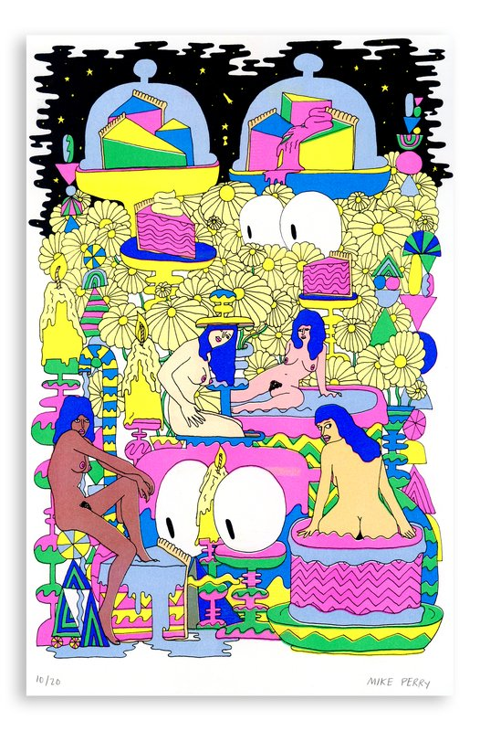
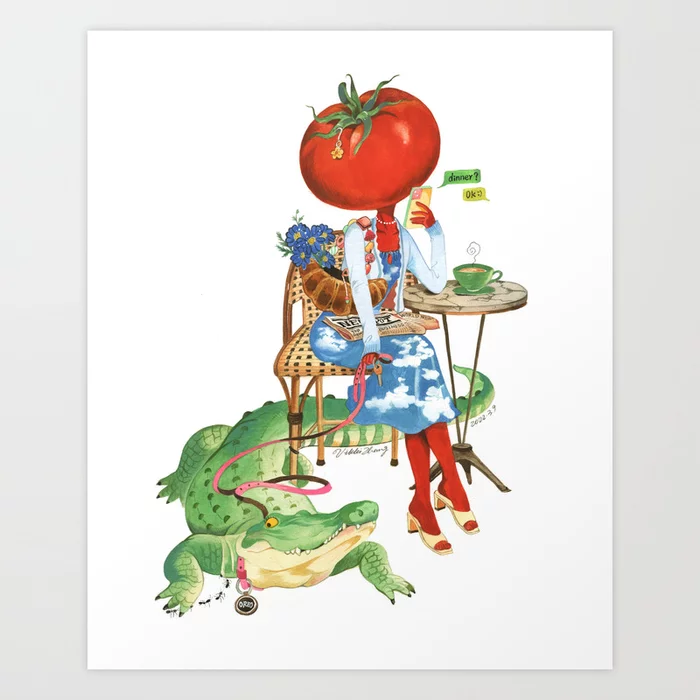

Home
Inspriation
List of Top 5's
My name is Emily Sperling,
these are a few of the artists who
inspire
me
Marilyn Scott-Waters

She is a personal friend that has a very impressive carrer that has always inspired me to push myself.
Marilyn's Portfolio
Mike Perry

His style has always pushed me to think outside the box, and create pieces that push me to my limits on thinking and designing
Mike Perry's Portfolio
Vikki Zhang

She is an artist that I have been getting into recently, she creates these short comics around her characters that are all based around fruits and veggies. She inspires me to think outside the box
Vikki Zhang's Portfolio